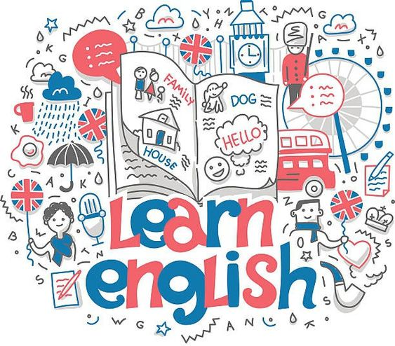
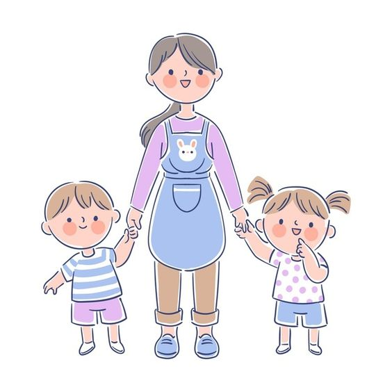

Diplomado en enfermería
Nuestro diplomado en enfermería es un programa educativo diseñado para enfermeros y enfermeras que desean expandir sus conocimientos y habilidades en el campo de la salud.
Con un enfoque práctico y basado en evidencia, este diplomado te proporcionará las herramientas necesarias para destacarte en tu práctica profesional y enfrentar los desafíos actuales del sistema de salud.

Cultora de belleza y estilismo profecional
Nuestro diplomado en cosmetología y estilismo profesional es una oportunidad única para aquellos apasionados por el mundo de la belleza y el estilo.
Diseñado para brindarte las habilidades y conocimientos necesarios para triunfar en la industria de la belleza, este programa te sumergirá en un viaje emocionante hacia la creatividad y la excelencia técnica.
Lengua inglesa
Nuestro diplomado en lengua inglesa te ofrece la oportunidad de sumergirte en el fascinante mundo del inglés, el idioma más hablado y utilizado en todo el mundo.
Diseñado para estudiantes de todos los niveles, desde principiantes hasta avanzados, este programa te proporcionará las habilidades lingüísticas necesarias para comunicarte de manera efectiva en inglés en diversas situaciones y contextos.

Asistente educativo
Nuestro diplomado en asistente educativo te preparará para desempeñar un papel fundamental en el cuidado y la educación de los niños en sus primeros años de vida.
Diseñado para personas apasionadas por el trabajo con niños, este programa te proporcionará las habilidades y conocimientos necesarios para brindar un entorno seguro,
afectuoso y estimulante que promueva su desarrollo integral.

Preparatoria
Nuestro programa de preparatoria en sistema sabatino y de domingos es la opción perfecta para aquellos que desean obtener
su certificado de educación media superior sin interferir con sus compromisos laborales o personales durante la semana.
Diseñado para brindar flexibilidad y accesibilidad, este programa te permitirá completar tu educación secundaria en un
entorno de aprendizaje cómodo y adaptado a tus necesidades.
Centro de Estudios Técnicos En Informática